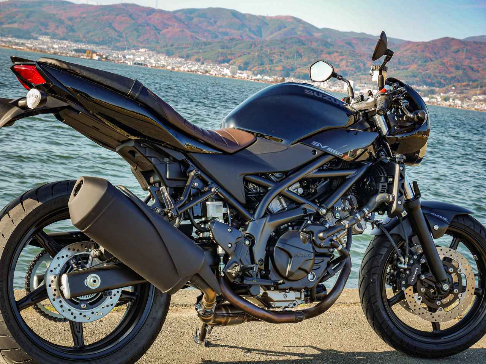
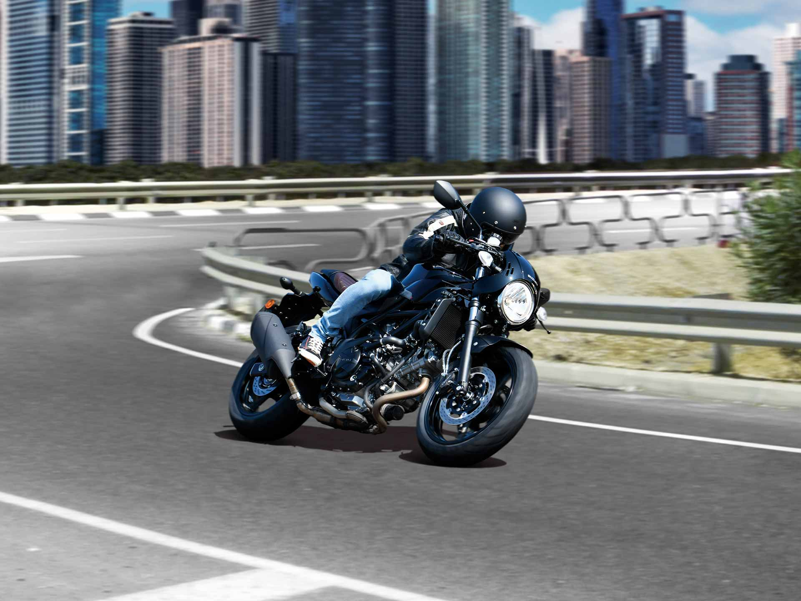
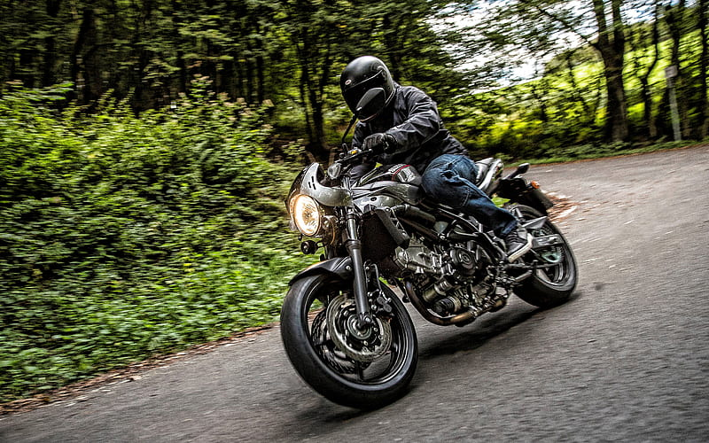
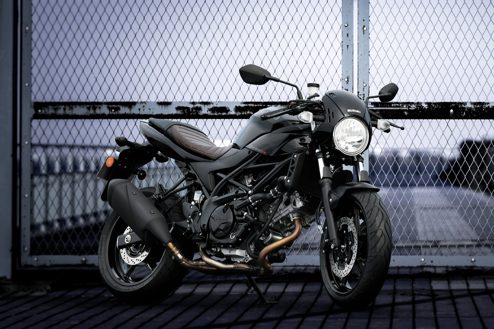
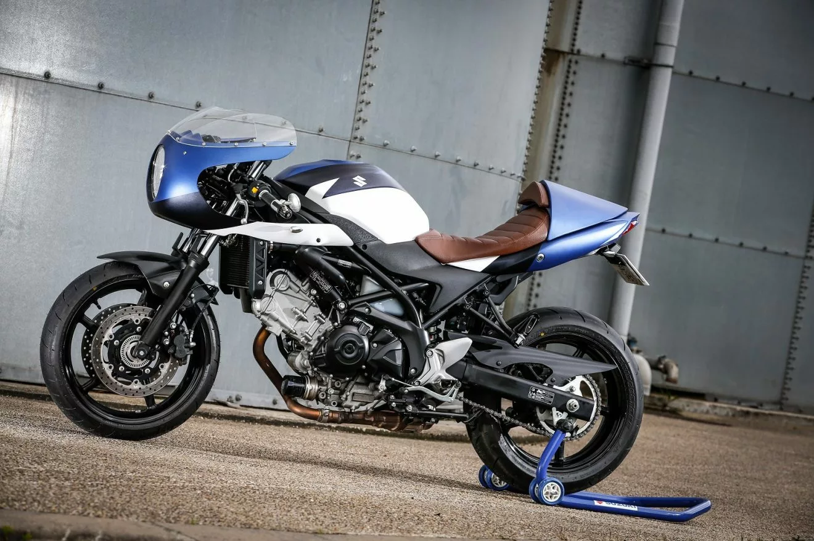

SUZUKI
SUZUKI
Is a motorcycle that combines power, agility, and classic racer looks¹.
The SV650X is powered by a smooth revving V-Twin engine¹. The V-Twin engine delivers powerful torque at lower RPM, has a linear and smooth power response at mid-range, and is ready to perform at higher RPM¹. The engine produces a maximum peak output power of 75.00 HP (54.7 kW) at 8400 RPM and a maximum torque of 64.00 Nm (6.5 kgf-m or 47.2 ft.lbs) at 6400 RPM⁵.
The SV650X features a slim and lightweight trellis frame¹. It is equipped with clip-on handlebars, which encourage a sporty riding position¹. The seat is narrow, streamlined, and exudes retro looks and feel¹. The SV650X has a ready-to-ride weight of only 200kg, making manoeuvring and handling easy and pleasurable¹.
The stopping performance comes courtesy of large 290 mm dual front disc brakes and a 240 mm rear brake disc¹.
The front suspension system employs durable 41 mm telescopic right way upfront forks with 125 mm travel¹. The rear features link-type suspension with a stroke of 63 mm¹.
As of 2024, the SV650X is available for £7,699¹.